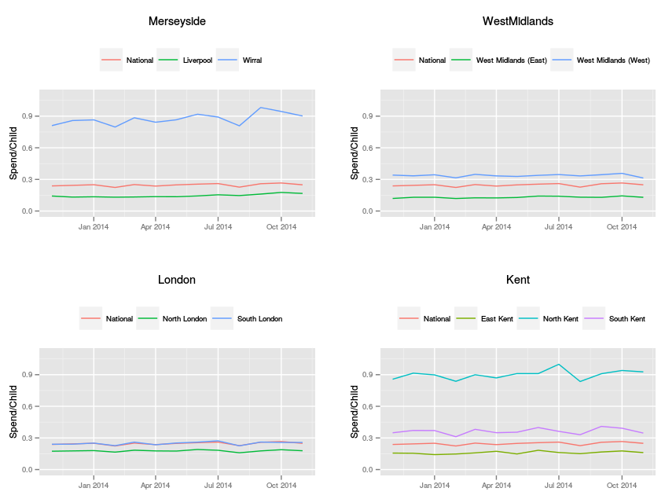

NHS Prescribing Data Releases Confirm Earlier Work

In 2013 we published a paper in BMJ Open describing the use of the newly-released GP prescribing data. This dataset contained monthly summaries of all NHS drug and appliance prescriptions for each GP practice, broken down by chemical formula. We looked at the first released month and discovered stark contrasts between adjacent areas of the country. For example, spending on Ritalin in the Wirral is about eight times the spend in Liverpool, just across the Mersey estuary.
Our summary table from the paper shows the spending on Methylphenidate (Ritalin) in nine areas we defined in the paper, together with the national average.
| Region | Spend Per child (£) |
|---|---|
| Liverpool | 0.074 |
| Wirral | 0.604 |
| West Midlands (East) | 0.074 |
| West Midlands (West) | 0.304 |
| London (North) | 0.117 |
| London (South) | 0.170 |
| North Kent | 0.724 |
| East Kent | 0.118 |
| South Kent | 0.322 |
| England average | 0.207 |
Given this was from the first published month of the data, these figures could easily have come from under- or over-reporting errors from a newly implemented data processing stream. Since then, the data has been published monthly and at a more detailed level - the prescriptions are now broken down by chemical and label, enabling researchers to compare spending on generic versus branded medicines.
As part of a University internship scheme, we employed two recent graduates from our Computing Department to construct a system for collecting the published prescription data into a single database. From this we can easily query spending in a particular month for a given area on any drug.
With the most recently available 13 months in the database, we recomputed total monthly spending per child for the regions in the table. The number of children per GP practice was also updated from more recent published data. The resulting plots show similar spending rate patterns to the table.
We still do not have an explanation for the extreme variation in Ritalin spending in the Wirral and North Kent.
This work was done as part of the Farr @ HeRC project on using routinely-collected healthcare data.
Updated: Monday 30 March, 2015